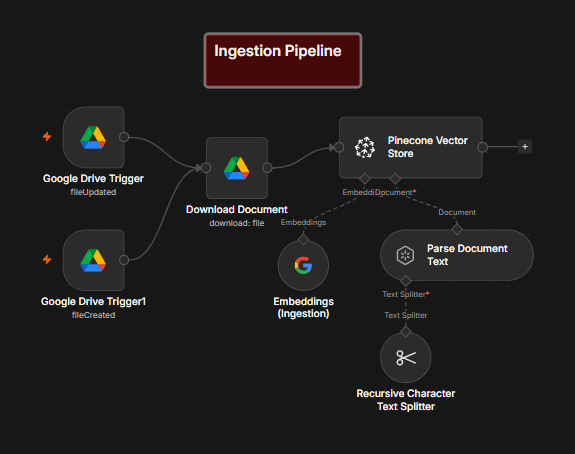
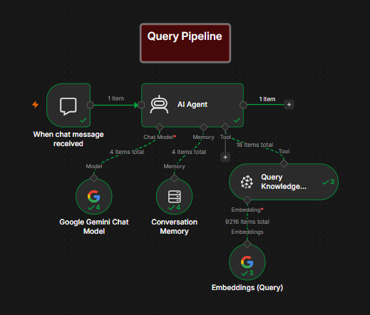

RAG Pipeline AI Chatbot
Project Overview
A retrieval-augmented generation system, built entirely in n8n, that watches a Google Drive folder and automatically ingests any new or updated document. The demo persona is Nova, an internal assistant for a fictional company, NovaBridge Technologies, built to answer questions from an employee handbook, internal policies, and an FAQ document — and to say so honestly when the answer isn't in there.
Note on Defensibility: This isn't a custom Python retrieval pipeline — it's built entirely with n8n's visual workflow tools. What I'm highlighting here is the orchestration itself: getting two separate trigger types to behave reliably, keeping ingestion and querying decoupled, and writing an agent prompt that refuses to guess when the knowledge base comes up empty.
Ingestion Pipeline
This half of the workflow runs independently of the chat and handles getting documents into the knowledge base. It uses two separate Google Drive trigger nodes watching the same folder — one on file created, one on file updated. Because a single trigger type turned out to miss changes. Once a file change is caught, the document is downloaded, split into 1000-character chunks with no overlap, embedded with Gemini, and stored in a shared Pinecone namespace so the chatbot can pull from either source document without needing to know which one an answer came from.

Ingestion half of the workflow — dual Drive triggers to document, chunk, and embed.
Query Pipeline
When a message comes in, the AI Agent checks conversation memory for context, then decides whether it needs to look something up. If it does, it calls the Pinecone retrieval tool, searches the shared namespace, and generates a response using only what comes back. The agent runs under a fairly strict system prompt: it has to check the knowledge base before answering anything, it isn't allowed to fall back on general knowledge, and if the retrieved context isn't enough, it says so instead of guessing.

Query half of the workflow — memory check, retrieval, grounded response.
Proving It Actually Updates Live
The most important thing to demonstrate wasn't that the chatbot could answer questions — it's that the knowledge base stays current without anyone touching the workflow. The repo includes two recorded demos showing this end to end:
- A short FAQ and policy document is indexed and queried first, and the agent answers correctly using the retrieved context.
- A second, longer document is then dropped into the watched folder in a separate session. The trigger fires on its own, the new content gets indexed with no manual steps, and the agent correctly answers a question that only exists in that second document with no mixing or hallucination pulled from the first.
What's Actually Been Tested
Verified end to end with two documents. Not yet tested: a larger document set, multiple people chatting at once, or documents that genuinely contradict each other. Though the system prompt does include instructions for handling that case if it comes up.
Known Limitations
- No error handling yet if a file fails to download, parse, or embed.
- Only tested with two documents. Retrieval quality at a larger scale is unverified.
- Runs on a local, self-hosted n8n instance, not deployed anywhere persistent or public.
- Multi part questions can trigger more than one round of retrieval before answering. This is expected agent behavior, but it adds latency and token cost.